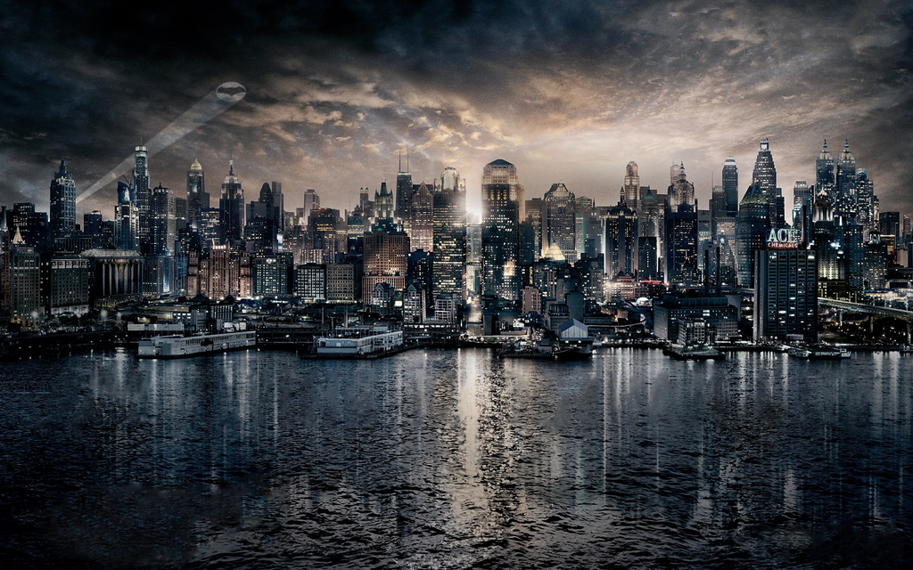

About
In the name of his murdered parents, Bruce Wayne wages eternal war on the criminals of Gotham City. He is vengeance. He is the night. He is Batman. One of the most iconic fictional characters in the world, Batman has dedicated his life to an endless crusade, a war on all criminals in the name of his murdered parents, who were taken from him when he was just a child. Since that tragic night, he has trained his body and mind to near physical perfection to be a self-made Super Hero. He's developed an arsenal of technology that would put most armies to shame. And he's assembled teams of his fellow DC Super Heroes, like the Justice League, the Outsiders and Batman, Incorporated. A playboy billionaire by day, Bruce Wayne's double life affords him the comfort of a life without financial worry, a loyal butler-turned-guardian and the perfect base of operations in the ancient network of caves beneath his family's sprawling estate. By night, however, he sheds all pre-tense, dons his iconic scalloped cape and pointed cowl and takes to the shadowy streets, skies and rooftops of Gotham City
Gotham city or simply Gotham, is a fictional city appearing in American Comic books published by DC Comics, best known as the home of the superhero batman and his close allies. The city was first identified as Batman place of residence in Batman #4 (December 1940) and has since been the primary setting for stories featuring the character. Gotham City is traditionally depicted as being located in the U.S. state of New Jersey.Gotham's look and atmosphere was primarily influenced by New York City. Batman co-creator Bill Finger chose the name “Gotham” so that the residents of any city could identify with it.